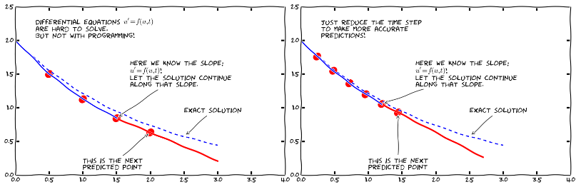
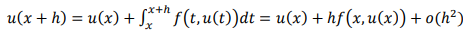
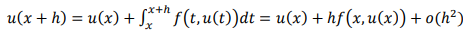

Увод у обичне диференцијалне једначине

Ојлеров метод за решавање Кошијевог проблема обичне диференцијалне једначине
 ,
,

 до

до

еквидистантни чворови,
а  приближне вредности функције у тим чворовима.
приближне вредности функције у тим чворовима.
function [sol,time] = ode(f,u0,h,n)
u=zeros(n+1,1);
u(1)=u0;
t=linspace(0,n*h,length(u));
for i=1:n
u(i+1)=u(1)+h*f(u(n),t(n));
endfor
sol=u;
time=t;
end
Ако нам је циљ да нађемо приближне вредности функције у непосредној околини почетне тачке, ова метода даје задовољавајуће резултате. У том случају, што је мањи корак h наше израчунате вредности ће бити приближније правим вредностима. На слици испод је дат пример одступања резултата методе од правих вредности функције у датим тачкама у случају да је корак 2 (прва слика) и у случају да је корак 0.5 (друга слика).

На сличан начин у Оctave-у можемо имплементирати и методу Рунге Кута.
function [tt, yy] = runge_kutta(f,t0,y0,h,N)
k = N+1;
tt = zeros(k,1);
yy = zeros(k,1);
tt(1) = t0;
yy(1) = y0;
for i = 2:k
tt(i) = tt(i-1) + h;
m1 = f(tt(i-1),yy(i-1));
m2 = f(tt(i-1) + (h/2),yy(i-1) + (h/2)*m1);
m3 = f(tt(i-1) + (h/2),yy(i-1) + (h/2)*m2);
m4 = f(tt(i),yy(i-1) + h*m3);
yy(i) = yy(i-1) + h*(m1 + 2*m2 + 2*m3 + m4)/6;
end
end
Решавање обичне диференцијалне jедначине коришћењем уграђене функције lsode
Нека је дат Кошијев порблем следећег облика:
,
Овај проблем се лако може решити у Octave-у коришћењем уграђене функције lsode. Потпис ове функције је следећи
[y, istate, msg] = lsode (fcn, u_0, x)
где је x вектор еквидистантних временских тренутака у којима тражимо решење, дата вредност функције у тренутку , а fcn функција над којом позивамо методу. Ова функција мора бити облика:
fcn(x,t)=z
где су x и z вектори, а t скалар.
Решење се налази у матрици у којој сваки ред одговара елементу вектора x. Први ред излаза одговара тренутку па је прва вредност у матрици дато .
Након успешног извршавања, istate ће садржати вредност 2. Ако извршавање није било успешно, istate ће садржати неку вредност различиту од 2 и msg ће садржати додатне информације о грешки која је настала.
Пример коришћења ове функције у Octave:
>> fcn = @(y,t) [y(2); (1-y(1)^2)*y(2)-y(1)];
>> t = linspace(0,2,10)
t =
0 0.2222 0.4444 0.6667 0.8889 1.1111 1.3333 1.5556 1.7778 2.0000
>> [y,istate,msg] = lsode(fcn,[2;0],t)
y =
2.0000 0
1.9600 -0.3245
1.8665 -0.5016
1.7413 -0.6205
1.5917 -0.7252
1.4182 -0.8402
1.2162 -0.9843
0.9770 -1.1792
0.6863 -1.4527
0.3233 -1.8330
istate = 2
msg = successful exit